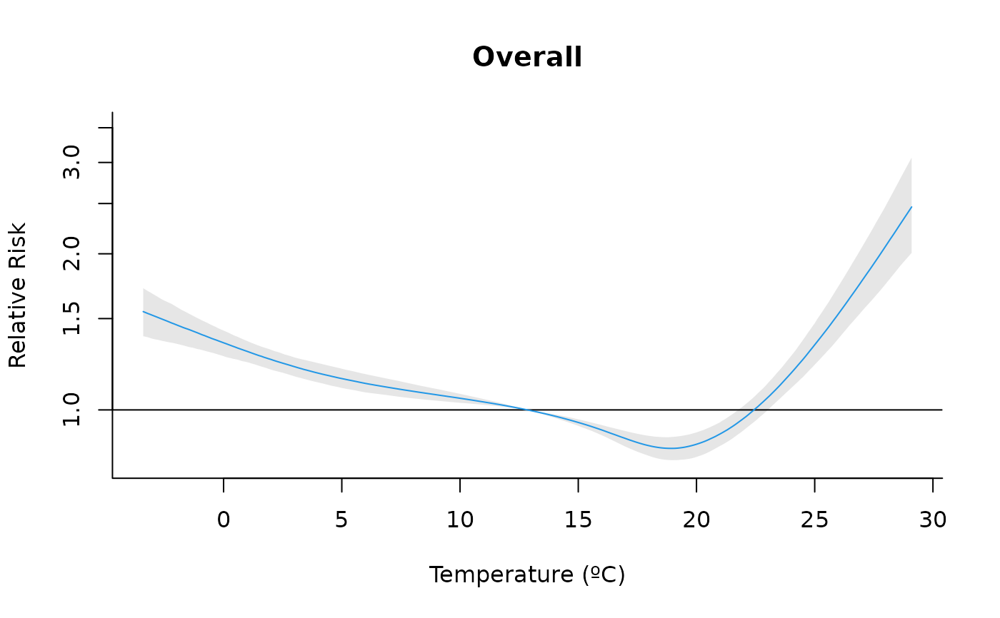
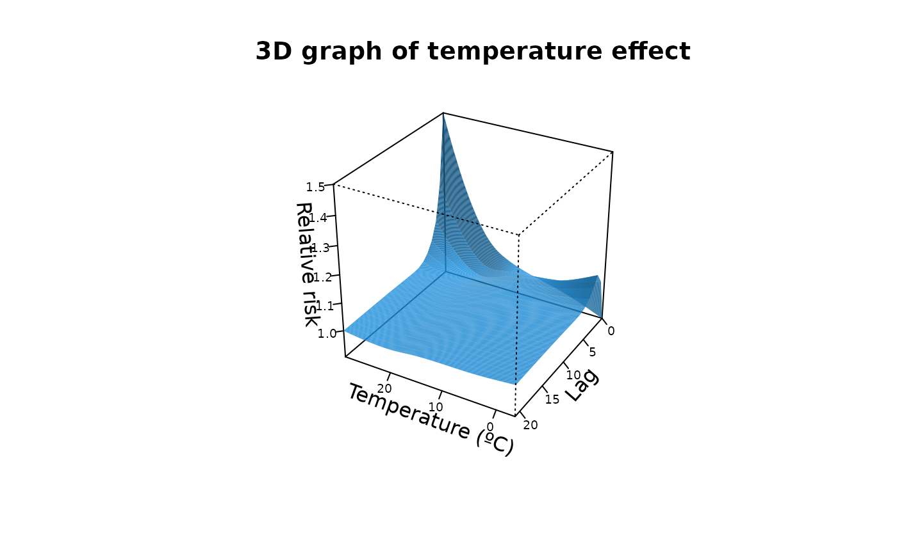
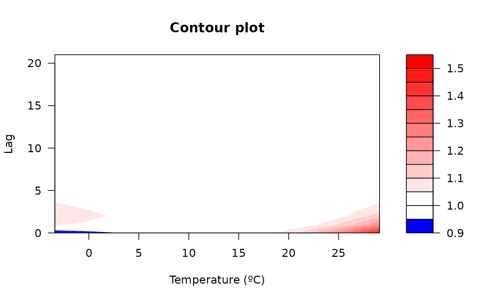
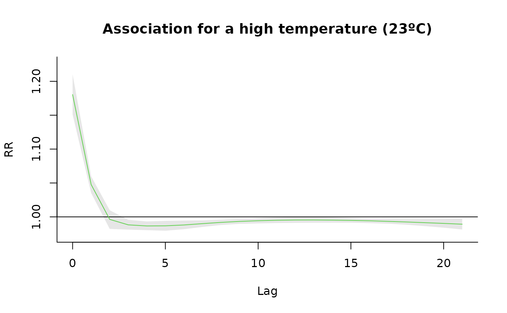
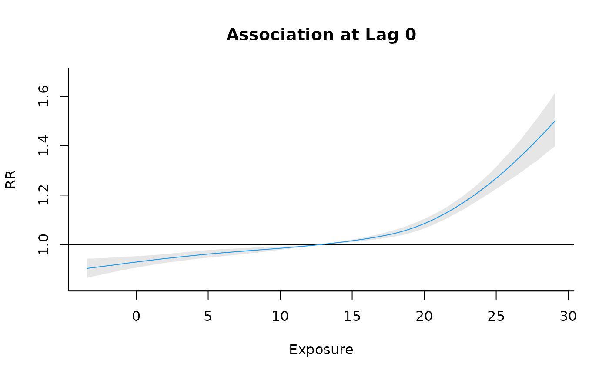

Plot the predicted effects from a Bayesian distributed-lag model (B-DLNM).
Source:R/plot.bcrosspred.R
plot.bcrosspred.RdIt plots the lag-specific, overall, slices, contour or 3D representations for predicted effects generated by bcrosspred().
Usage
# S3 method for class 'bcrosspred'
plot(
x,
ptype,
exp_at = NULL,
lag_at = NULL,
ci = "area",
ci.arg,
ci.level = x$ci.level,
cumul = FALSE,
exponentiate = NULL,
...
)Arguments
- x
An object of class
"bcrosspred"returned bybcrosspred().- ptype
Character. Plot type: one of
"slices","overall","3d"or"contour".- exp_at
Numeric vector of exposure values (predictor) for the
"slices"plot type (maximum length of 4).- lag_at
Numeric vector of lags for the
"slices"plot type (maximum length of 4).- ci
Character. How to plot credible intervals: one of
"area","bars","lines","sampling"(draw a line for each posterior sample) or"none". Default:"area".- ci.arg
List of graphical arguments for the plotting of credible intervals passed to base plotting functions (see
Details).- ci.level
Numeric in
(0,1). Credible interval level. Default is taken fromx$ci.level.- cumul
Logical. If
TRUE, plot incremental cumulative predictions (requires cumulative predictions inx).- exponentiate
Logical. Set to
TRUEto plot exponentiated effects (relative risks) and toFALSEto not plot them. The default isNULLin which the function usesx$model.linkto automatically detect whether to use relative risks (when link islogorlogit).- ...
Additional graphical arguments passed to base plotting functions (see
Details).
Details
The function supports different visualizations for posterior effects predicted by bcrosspred() specified in ptype:
"slices": (optionally multi-panel) line plot of the predicted effect over lag(s) for selected exposure value(s) or over exposure value(s) for selected lag(s). Useexp_atand/orlag_atto specify which slices to draw (at least one must be supplied). At most 4 slices of each type are allowed to keep layouts readable. Seeplot.default(),lines()andpoints()for information on additional graphical arguments."overall": plot the predicted overall cumulative effect over the whole lag period for each exposure value in the prediction grid. Seeplot.default(),lines()andpoints()for information on additional graphical arguments."3d": 3D plot of the surface of the predicted effect for each exposure and lag. Uses the median of the posterior samples. Not meaningful for single lag models. Additional graphical arguments can be included, such asthetaorphi(perspective),borderorshade(surface),xlab,ylaborzlab(axis labelling) andcol.Seepersp()for additional information."contour": filled contour of the surface of the predicted effect for each exposure and lag. Uses the median of the posterior samples. Not meaningful for single lag models. Additional graphical arguments can be included, such asplot.title,plot.axesorkey.titlefor titles and axis and key labelling. Seefilled.contour()for additional information.
The function will call the specified original base plotting functions for each different ptype. Via the argument ... the user can change the graphical parameters that will be passed to these functions. See the original functions for a complete list of the arguments. Some arguments, if not specified, are set to different default values than the original functions.
Credible intervals will only be drawn for ptype equal to "slices" or "overall". The type of credible interval will be given by the ci argument, with options "area" (default), "bars", "lines", "sampling" (draw a line for each posterior sample) or "none" (no credible intervals). Their appearance may be modified through ci.arg, a list of arguments passed to to low-level plotting functions: polygon() for "area", segments() for "bars" and lines() for "lines". See the original functions for a complete list of the arguments. As above, some unspecified arguments are set to different default values. The credible interval level will be given by ci.level or inferred from x$ci.level by default.
If exponentiated effects (relative risks) are specified (exponentiate = TRUE) or auto-detected if x$model.link is log or logit, the function will use the predicted relative risks stored in x$matRRfit, x$allRRfit or x$cumRRfit (if cumul=TRUE).
In the presence of unlagged or single lag associations, only the overall plot can be produced. In this case, the overall plot represents the effect at each predictor value, rather than the overall cumulative effect across lags.
Note
This function is inspired by dlnm::plot.crosspred() developed by Gasparrini (2011) doi:10.18637/jss.v043.i08. It has been adapted to work in a Bayesian framework within the bdlnm package.
References
Gasparrini A. (2011). Distributed lag linear and non-linear models in R: the package dlnm. Journal of Statistical Software, 43(8), 1-20. doi:10.18637/jss.v043.i08.
Quijal-Zamorano M., Martinez-Beneito M.A., Ballester J., Marí-Dell'Olmo M. (2024). Spatial Bayesian distributed lag non-linear models (SB-DLNM) for small-area exposure-lag-response epidemiological modelling. International Journal of Epidemiology, 53(3), dyae061. doi:10.1093/ije/dyae061.
See also
bcrosspred() to predict exposure–lag–response associations for a "bdlnm" object,
bdlnm() to fit a Bayesian distributed lag non-linear model ("bdlnm").
Examples
# Set exposure-response and lag-response spline parameters
dlnm_var <- list(
var_prc = c(10, 75, 90),
var_fun = "ns",
lag_fun = "ns",
max_lag = 21,
lagnk = 3
)
# Set cross-basis parameters
argvar <- list(fun = dlnm_var$var_fun,
knots = stats::quantile(london$tmean,
dlnm_var$var_prc/100, na.rm = TRUE),
Bound = range(london$tmean, na.rm = TRUE))
arglag <- list(fun = dlnm_var$lag_fun,
knots = dlnm::logknots(dlnm_var$max_lag, nk = dlnm_var$lagnk))
# Create crossbasis
cb <- dlnm::crossbasis(london$tmean, lag = dlnm_var$max_lag, argvar, arglag)
# Seasonality of mortality time series
seas <- splines::ns(london$date, df = round(8 * length(london$date) / 365.25))
# Prediction values (equidistant points)
temp <- round(seq(min(london$tmean), max(london$tmean), by = 0.1), 1)
# Ensure it falls inside the range of temperatures after rounding:
temp <- temp[temp >= min(london$tmean) & temp <= max(london$tmean)]
if (check_inla()) {
# Fit the model
mod <- bdlnm(mort_75plus ~ cb + factor(dow) + seas, data = london, family = "poisson",
sample.arg = list(seed = 432, seed = 1L))
# Prediction
cpred <- bcrosspred(mod, exp_at = temp)
# Perform the plots:
#Overall
plot(cpred, "overall", xlab = "Temperature (ºC)", ylab = "Relative Risk", col = 4,
main="Overall", log = "y")
#3-D plot
plot(cpred, "3d", zlab = "Relative risk", col = 4, lphi = 60, cex.axis = 0.6,
xlab = "Temperature (ºC)", main = "3D graph of temperature effect")
#Contour
plot(cpred, "contour", xlab = "Temperature (ºC)", ylab = "Lag", main="Contour plot")
#Slices (for a high temperature)
htemp <- 23
plot(cpred , "slices", exp_at = htemp, col=3, ylab="RR",
main=paste0("Association for a high temperature (", htemp, "ºC)"))
#Slices (for lag 0)
plot(cpred , "slices", lag_at = 0, col=4, ylab="RR", main=paste0("Association at Lag 0"))
}
#> Warning: Since 'seed!=0', parallel model is disabled and serial model is selected, num.threads='1:1'
#> Warning: Centering value unspecified (`cen`). Automatically set to: 12.85.




